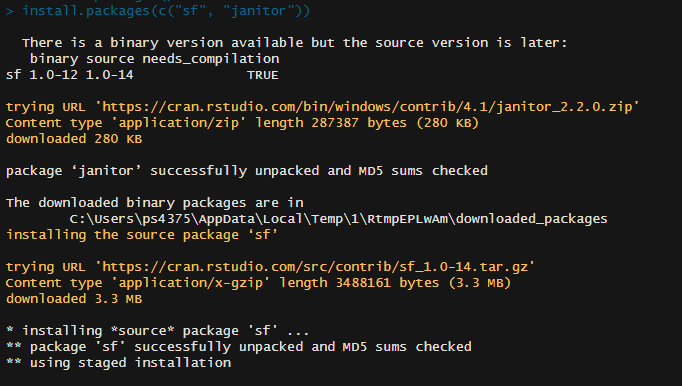

R is a base programming language. We access R through a library of different packages. Packages are downloadable content that we use in R to modify data. Packages are made up of functions, which we use to modify and analyze data.
Base R has a number of functions, packages, and data already installed, which we can preview by putting code in our console.
Take the iris dataset for example, which we can access by simply typing iris
head(iris) #head just limits the output to the first few rows of a dataset. put "iris" into your console to see the whole dataset
To get started with R, we need to install packages beyond the preinstalled.
We install packages with a console command, using a function called install.packages(). We can get our first, and most crucial package, the tidyverse, using this function. Copy this into your console. Make sure to put the package name in quotes.
#install.packages("tidyverse") #remove the # at the front to actually get this to run
We can install multiple packages at once by putting them into a list (also called a vector), like so. More on lists later.

Finally we need to load packages at the beginning of our .Rscript in order to use them. The library() function loads functions that we have installed. Note that we only need to install packages once, so we use the command line. But we need to load packages with library each time we use them, so we put that in our .Rscript.
library(tidyverse)
── Attaching core tidyverse packages ──────────────────────── tidyverse 2.0.0 ──
✔ dplyr 1.1.4 ✔ readr 2.1.5
✔ forcats 1.0.0 ✔ stringr 1.5.1
✔ ggplot2 3.5.1 ✔ tibble 3.2.1
✔ lubridate 1.9.3 ✔ tidyr 1.3.1
✔ purrr 1.0.2
── Conflicts ────────────────────────────────────────── tidyverse_conflicts() ──
✖ dplyr::filter() masks stats::filter()
✖ dplyr::lag() masks stats::lag()
ℹ Use the conflicted package (<http://conflicted.r-lib.org/>) to force all conflicts to become errors
Functions
So how do these functions we’ve been using work?
Each function has a name and arguments. The name of a function tells R the operation we want to do. The arguments are the inputs for the function, or what we want to transform, separated by commas.
You can look up any R function by typing the function name into the console, preceded by a ?.
?install.packages()
When we look at the first function we used, install.packages() the help menu pops up in the bottom right, describing the function, the arguments, and giving us examples. The first argument is called pkgs and it’s defined as “character vector of the names of the packages whose current versions should be downloaded from the repositories.” That first argument is required. Without it install.packages() won’t know which package to install.
Note that the argument here, the name of the package, is in quotes. In programming, quotes define character objects. In this case the function requires a character input, so we use quotes. More on this later when we talk about data types.
Arguments in R can be named or ordered. Naming an argument means adding the name of the argument, followed by = and then the value of the argument. Unnamed arguments rely on the programmer to put each argument in the proper order, separated by commas. In this case, pkgs is the first argument. So install.packages(pkgs = "tidyverse") and install.packages("tidyverse") do the same thing. When you are getting started programming, it’s good practice to name your arguments.
Tidy Data
Our first package, the tidyverse features a number of functions that help keep our data organized in a way that a computer can read, understand, and transform it. The tidyverse uses a principle of tidy data, a standard way of mapping the meaning of a dataset to its structure. In tidy data…
Every column is a variable.
Every row is an observation.
Every cell is a single value.
Next time we’ll learn how to read in data, keep it tidy, and get our observations in the right data types.
Take a second look at iris to see an example of a tidy dataset. There’s one row (observation) for each flower in the sample, a column for each variable (measurements and species) and one value in each cell, the value of that variable for that observation.